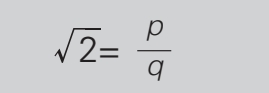
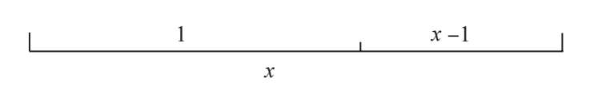
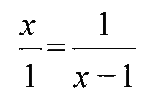
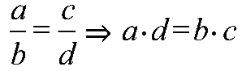
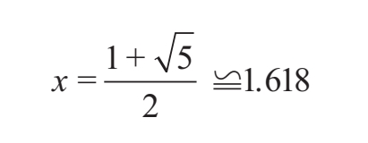
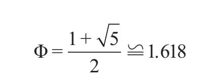

的无理性
的无理性
让我们假设是有理数。这意味着可以用自然数之比来表示：

假设p和q既是整数又是质数（两数不相同）。将等式变形后两边同时平方，由
2q2=p2
可知p是一个偶数。但如果p是偶数，p=2r，那么
2q2=4r2
将等式化简得到
q2=2r2
由此得出q也是偶数。既然p和q都是偶数，那么就不会是质数，而且2是它们的公约数。不管怎样思考这个问题，结果总是自相矛盾的。因此一开始是有理数的假设就是错误的。
黄金比例是一个无理数，我们用希腊字母Φ表示。黄金比例由古希腊人发现，最早的文字记录出现在《几何原本》中。该书是历史上最有名、再版次数最多的书籍之一，作者是欧几里得，大约写于公元前300年。
这部经典著作是历史上最早的科普畅销书。欧几里得写这本书有两个目的。首先，他想要把那个年代所有的数学发现加以汇编，构成一部类似百科全书的工具书，而这本书也可以用作课本进行教学。其次，他希望引入一种特定的方法来展示证明过程，基于公理（不证自明的事实）和演绎法创立一种全新的数学理论。
毋庸置疑，《几何原本》是成功的，它对各个数学分支的发展起着决定性的作用。20世纪的数学家兼教师卢乔·隆巴尔多·拉迪切曾写道：“除了《圣经》和列宁的作品外，它（指《几何原本》）是出版和被翻译语言最多的一本书。几十年前，这本书曾是中学的几何教材。”在全世界的教育体系中数学都是必修课，因此只要是上学的地球人都会在教科书中读到来自《几何原本》的内容。
的无理性
让我们假设是有理数。这意味着可以用自然数之比来表示：

假设p和q既是整数又是质数（两数不相同）。将等式变形后两边同时平方，由
2q2=p2
可知p是一个偶数。但如果p是偶数，p=2r，那么
2q2=4r2
将等式化简得到
q2=2r2
由此得出q也是偶数。既然p和q都是偶数，那么就不会是质数，而且2是它们的公约数。不管怎样思考这个问题，结果总是自相矛盾的。因此一开始是有理数的假设就是错误的。
《几何原本》共十三卷。卷一至卷六的主要内容是基础几何，卷七至卷十是几何数论，最后三卷则是立体几何。卷六的第三条定义如下：
“把一条线段分为两段，如果整条线段与较长线段之比等于较长线段与较短线段之比，那么这条线段是按中外比（extreme and mean ratio）分割的。”
简单来说，就是“整体比部分等于该部分比另一部分”。1570年，亨利·比林斯利首次将《几何原本》翻译成英文，之后不久他便成了伦敦市长。
毫不起眼的中外比很容易被人们忽视，但是后来却成为了人们熟知的黄金比例。1509年，卢卡·帕乔利最终完成了《神圣比例》全稿。现代的黄金比例符号Φ很晚才出现。20世纪初，美国人马克·巴尔提议将雅典帕提侬神庙的建造者菲狄亚斯同黄金比例结合在一起，并用菲狄亚斯希腊名字的首字母Φ作为黄金比例的符号。
我们已经讲了黄金比例背后的故事，并将它归为了无理数，现在终于可以全身心地研究黄金比例的数学性质。首先，我们需要算出黄金比例。
亚历山大城的欧几里得（公元前325—公元前265）
欧几里得在数学史上有着崇高的地位，但我们对他的生平几乎一无所知。人们经常把他与另一位来自迈加拉的欧几里得混为一谈。亚历山大城的欧几里得大约出生于公元前325年。根据记载，他在25岁时就已经成为亚历山大博物馆的数学部主管。亚历山大博物馆是“女神缪斯的庇护所”，相比公共景区来说，这个机构更像是图书馆和大学。事实上，亚历山大博物馆是地中海地区主要的科学中心，它的图书馆堪称奇迹，馆内保存了当时所有主要科学著作的副本。据说欧几里得曾在雅典接受过教育，大约于公元前265年去世。即使在去世前，他的作品也备受推崇。欧几里得的影响延续了数个世纪，甚至到了20世纪30年代，一批来自布尔巴基学派的数学家想要彻底改变数学，他们最引人注目的口号就是“打倒欧几里得”。
《雅典学院》局部图，拉斐尔绘。拉斐尔所画的欧几里得手拿圆规，面部则是参照了建筑大师布拉曼特（Bramante）本人。

假设有一条线段，如果

，那么这条线段就是欧几里得所说的按照中外比（也就是黄金比例）分成了两段。⇒如果两个分数相等，那它们交叉相乘后也会相等：

。这样我们就得到了下面的一元二次方程：x·（x-1）=1·1→x2-x=1
移项后方程变为x2-x-1=0 （1）
这个方程有两个解，我们需要的是正数解：

我们把求出的正数解称为Φ：

由于方程（1）的正数解是线段长度之比，所以不管初始线段有多长，这个比例始终不变。换句话说，黄金比例不因线段总长的改变而改变。
在黄金比例的表达式中，由于5开平方后无法得到有理数，因此Φ是一个无理数。这意味着我们永远无法完整地写出它小数点后面的数字。此外，它的无限小数部分没有固定的循环节，因此Φ是一个无限不循环小数，而且这类小数永远无法完成计算。因为黄金比例的重要性体现在几何方面而不是数字方面，所以没有必要算出更加精确的Φ。让Φ=1.618033988749894就足够了，因为将其精确到小数点后十五位已经满足了我们所有的计算需要。
下面让我们拿出计算器来做一些简单的计算。保留Φ的前五位小数，得到近似值Φ=1.61803。
首先，我们用1除以Φ，答案是什么？0.61803。除了整数部分1以外，两者的小数部分完全相同。由此可以得出1/Φ=Φ-1。
下面算出Φ的平方。由于我们取了Φ的近似值，因此Φ2=Φ+1。这只是巧合吗？当然不是，谜题即将揭晓。